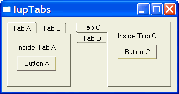

Creates a Tabs element. Allows a single dialog to have several screens, grouping options. The grouping is done in a single line of tabs arranged according to the tab type. It inherits from IupCanvas. It contains a IupZbox to control the groups of controls. The IupZbox is a child of the IupCanvas, so all the attributes set in the Tabs will affect its child by attribute inheritance.
Ihandle* IupTabs(Ihandle* elem1, Ihandle* elem2, ...); [in C] Ihandle* IupTabsv(Ihandle** elems); [in C] iup.tabs{elem1, elem2, ...: ihandle} -> (elem: ihandle) [in Lua] tabs(elem1, elem2, ...) [in LED]elem1, elem2, ...: List of the elements that will be placed into Tabs.
This function returns the created Tabs's identifier, or NULL if an error occurs. The second form in C must end the array with a NULL.
ALIGNMENT: In this case it is propagated to the Zbox when changed (ALIGMENT is one of the attributes that are not inherited from the parent). See the IupZbox documentation.
TABTITLE: Contains the text to be shown in the tab's title. If this value is NULL, it will remain empty. This attribute is used only in the elements contained in the tab.
TABTYPE: Indicates the type of tab, which can be one of the following:
"TOP", "BOTTOM", "LEFT" or "RIGHT". Default is "TOP".
TABORIENTATION: Indicates the orientation of tab text, which can be one of the following:
"HORIZONTAL" or "VERTICAL". Default is "HORIZONTAL".
FONT: Indicates the font to be used in the internal tab text. Font Table
FONT_ACTIVE: Indicates the font to be used when the tab is selected. Font Table
FONT_INACTIVE: Indicates the font to be used when the tab is inactive. Font Table
TABSIZE: Contains the size of a tab. If this value is NULL, the tab will be shown with the smallest possible value that fits its title. This size can refer to the whole IupTabs, thus affecting all tabs, or to a specific tab child. If both are defined, the size of the tab child will have priority over the global IupTabs size.
VALUE: Changes the active tab. The value passed must be the name of one of the elements contained in the tabs. Default: the first element. To set the name of an element, use the IupSetHandle function. In Lua you can also use the element reference directly.
ACTIVE: Allows or inhibits user interaction with a given tab. When the attribute is "NO", the corresponding tab modifies the text color to show that interaction is inhibited. Be careful, because a "REPAINT" may be needed to generate a Tabs repaint.
REPAINT: This attribute immediately generates a Tabs repaint.
TABCHANGE_CB: Callback called when the user shifts the active tab. The parameters passed are:
int function(Ihandle* self, Ihandle* new_tab, Ihandle* old_tab); [in C] elem:tabchange_cb(new_tab, old_tab: ihandle) -> (ret: number) [in Lua]
self: Ihandle* of the control
new_tab: Ihandle* of the tab selected by the user
old_tab: Ihandle* of the previously selected tab
The Tabs elements, differently from a ZBOX, does not need to have associated names. Those without a name will receive an automatically generated one.
When you change the active tab the focus is not changed. If you want to control the focus behavior call IupSetFocus in the TABCHANGE_CB callback.
